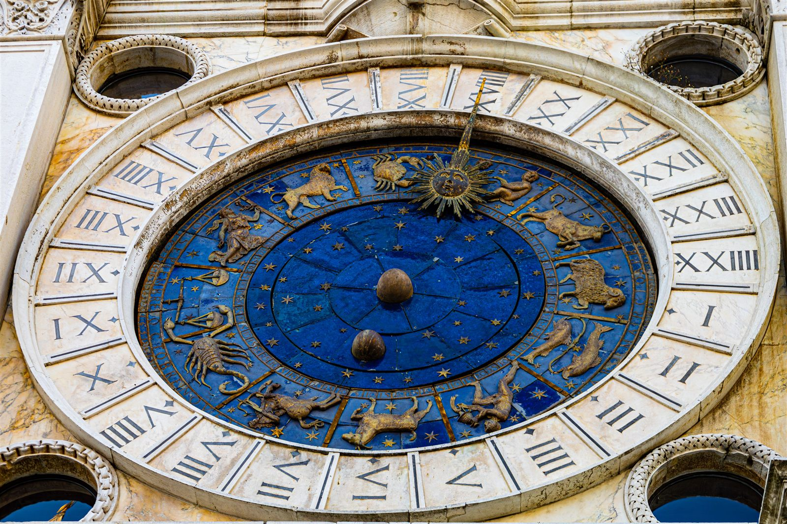
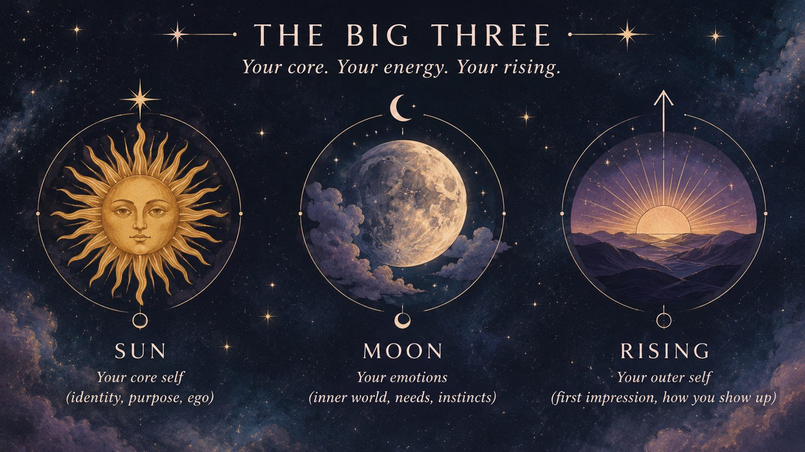

Ce este astrologia?
Astrologia este un ansamblu de practici divinatorii și simbolice care caută pe cer înțelesuri, îndrumare și tipare, observând și interpretând pozițiile și mișcările corpurilor cerești, precum Soarele, Luna, planetele și stelele.
Știința modernă clasifică astrologia drept pseudoștiință. Ea se bazează pe corespondențe simbolice, nu pe dovezi din observație sau pe mecanisme fizice, precum gravitația, care să influențeze comportamentul uman. Cu toate acestea, rămâne populară în toată lumea ca instrument de reflecție personală, divertisment și tradiție culturală.
Istorie
Istoria astrologiei este povestea unei legături profunde dintre om și cosmos, care începe cu mult înainte ca astrologia să devină o aplicație cu horoscopul zilei sau un instrument al identității personale. Primii oameni au observat că schimbările cerului nocturn se potriveau cu anotimpurile de pe pământ și au făcut semne pe oase și pe pereții peșterilor ca să urmărească ciclurile Lunii, încă de acum 25.000 de ani. Totuși, primul sistem astrologic cu adevărat organizat a apărut în Mesopotamia antică, mai exact în Babilonia, în mileniul al II-lea î.Hr. Această practică timpurie, cunoscută drept astrologie mundană, se ocupa strict de stat: prezicea vremea, schimbările din agricultură și deznodămintele politice pentru rege pe baza semnelor cerești, despre care oamenii credeau că sunt mesaje directe de la zei.
Astrologia pe care o cunoaștem azi, centrată pe harta natală a fiecărui om, a început să prindă contur în perioada elenistică, în Egipt (cam în secolele al III-lea și al II-lea î.Hr.). După cuceririle lui Alexandru cel Mare, tradițiile egiptene de măsurare a timpului cu ajutorul decanilor (grupuri anume de stele) s-au contopit cu zodiacul babilonian și cu filozofiile grecești despre elemente și zeii planetari. Din această sinteză s-a născut „astrologia horoscopică”. În epoca romană, influentul învățat Ptolemeu a scris la Alexandria „Tetrabiblos”, adunând aceste principii astrologice într-un text fundamental care avea să călăuzească tradiția astrologică occidentală vreme de peste o mie de ani.
Cunoașterea astrologică nu s-a dezvoltat izolat, ci printr-un vast schimb între culturi. După căderea Imperiului Roman, aceste tradiții au fost păstrate, extinse și rafinate matematic în lumea islamică și în Iranul sasanid. Învățații au tradus în arabă texte grecești, persane și indiene, transformând astrologia într-o preocupare academică și științifică foarte respectată. Până în secolul al XII-lea, aceste texte arabe au fost traduse în latină, readucând în Europa occidentală medievală un sistem astrologic foarte rafinat, care a influențat profund medicina, astronomia și cultura până la Revoluția științifică.
Cei trei mari: Soarele, Luna și Ascendentul
În astrologie, „cei trei mari” (în engleză, „Big Three”) sunt zodia ta solară, zodia lunară și ascendentul. Împreună, ele formează temelia hărții tale natale și îți descriu personalitatea.

Zodia solară (identitatea profundă)
- Ce reprezintă: Ego-ul, identitatea profundă, scopul în viață și sinele conștient.
- Cum se calculează: Pe baza datei nașterii (luna și ziua).
- Vibrația: Răspunde la întrebarea „Cine ești în esența ta?” și îți pune în mișcare ambițiile pe termen lung și energia vitală.
Zodia lunară (lumea emoțiilor)
- Ce reprezintă: Lumea ta emoțională interioară, instinctele, subconștientul și sinele intim.
- Cum se calculează: Pe baza datei nașterii și a orei exacte sau aproximative a nașterii (Luna se mișcă repede și schimbă zodia cam la fiecare 2,5 zile).
- Vibrația: Răspunde la întrebarea „Cum îți trăiești sentimentele și unde îți găsești siguranța?” Guvernează vulnerabilitățile ascunse și zonele tale de confort.
Ascendentul (chipul arătat lumii)
- Ce reprezintă: Personalitatea pe care o arăți în afară, prima impresie, masca socială și felul în care te văd ceilalți.
- Cum se calculează: Pe baza orei exacte și a locului nașterii (se schimbă cam la fiecare două ore, pe măsură ce zodiacul se rotește la orizontul estic).
- Vibrația: Răspunde la întrebarea „Cum pari când te cunosc oamenii prima dată?” sau „Ce haine poartă personalitatea ta?”
Îți poți afla cei trei mari aici (pagina este în engleză).